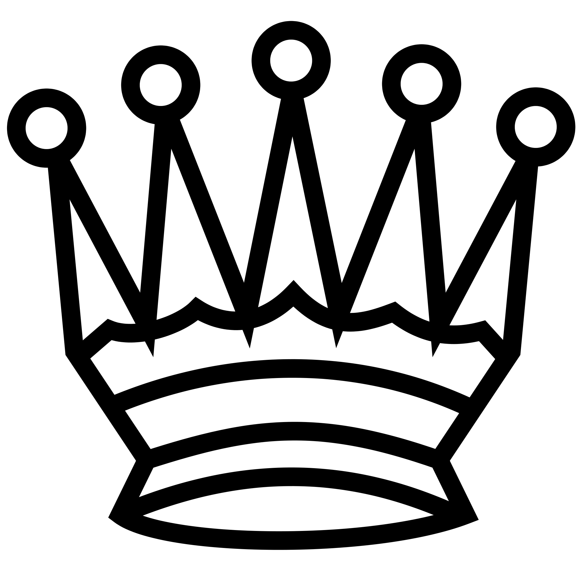

Projet - Problème des n-dames 
Ce projet propose de résoudre le problème des n-dames en utilisant différents algorithmes tels que le recuit simulé, la méthode de la liste tabou et l'algorithme génétique.
Le problème des n-dames consiste à placer n dames sur un échiquier de taille NxN sans qu'aucune dame n'en menace une autre, en suivant les règles de menaces des échecs.
 Nous recommandons d'utiliser Google Chrome pour tester les échiquiers de taille importante. Les résultats des tests sont lisibles dans la console javascript de votre navigateur.
Nous recommandons d'utiliser Google Chrome pour tester les échiquiers de taille importante. Les résultats des tests sont lisibles dans la console javascript de votre navigateur.
Situation initiale
Pour résoudre ce problème, nous avons décidé de placer par défaut une dame sur chaque colonne en suivant la diagonale selon le modèle suivant.
|  | |||
On applique ensuite l'algorithme voulu avec les paramètres définis.
Modélisation du problème :
Une solution est définie comme une liste de numéro de colonne pour chaque dame. Chaque dame est représentée par son index. L'échiquier précédent correspond par exemple à la solution [0, 1, 2, 3].
Calcul de la fitness :
La fitness est calculée de la manière suivante :
Pour chaque dame :
Pour chaque dame non explorée à la boucle 1 :
Si il y a un conflit : Ajouter 1 à la fitness
Fin pour
Fin pour
L'échiquier précédent par exemple a une fitness de 6. (3 + 2 + 1)
Voisinage :
Le voisin d'une solution est définie comme une permutation du numéro de colonne entre deux dames.
Par exemple, pour l'échiquier précédent représenté par la solution [0, 1, 2, 3] :
[1, 0, 2, 3] est une solution, [0,3, 2, 1] également.
[1, 3, 2, 0] n'en est pas un.